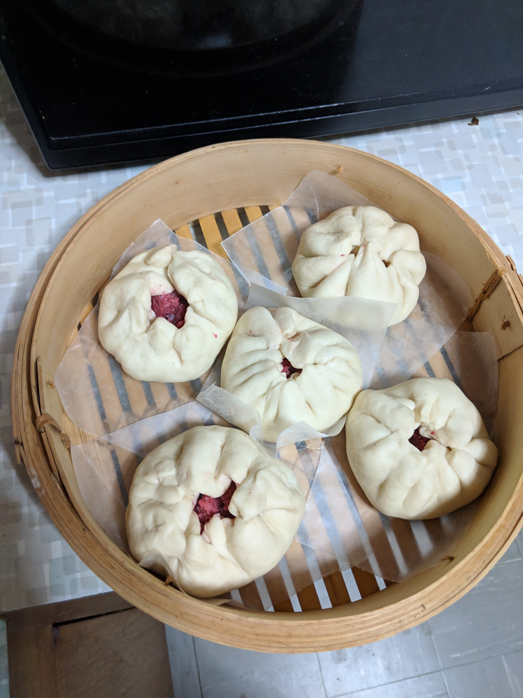

Char Siu Bao

Description
I still haven't really figured out how to keep the buns closed after steaming.
Ingredients
For the dough:
- 1 cup warm water
- 3 tbsp sugar
- 2 1/4 tsp yeast (1 packet)
- 3 cups flour
- 1 tbsp olive oil
- 1/4 tsp salt
For the filling:
- 1 lb ground pork
- Bottle of char siu sauce
Steps
Filling:
- Mix sauce and pork until combined.
Dough:
- Combine water, sugar, yeast. Let sit 5 minutes.
- Add 1 cup of flour at a time, mixing with rest of ingredients.
- Knead until smooth. Cover, let rise 1 hour.
- Punch down, let sit 5 minutes.
- Divide into 10 balls. Roll each ball into 5-inch circle.
- Place spoon of filling in middle of circle. Bring up sides of dough, pinching and sealing with a twist.
- Repeat for rest of balls.
Steam:
- Arrange buns on parchment paper in bamboo steamer.
- Add water to skillet (make sure water will not reach buns once steamer is placed inside) and bring to boil.
- Steam 15 minutes, then shut off heat and let cool 10 minutes. DO NOT OPEN THE STEAMER.
- Once it's had time to finish cooking, open steamer and serve still warm.
Back to recipe list